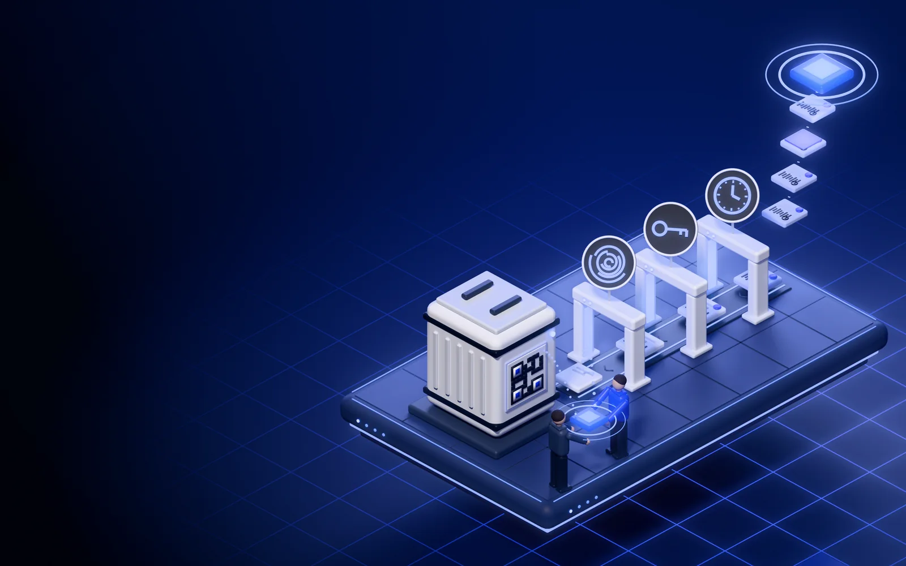
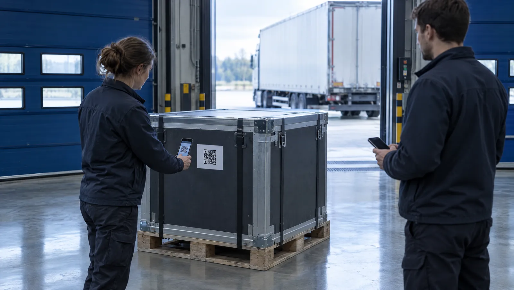
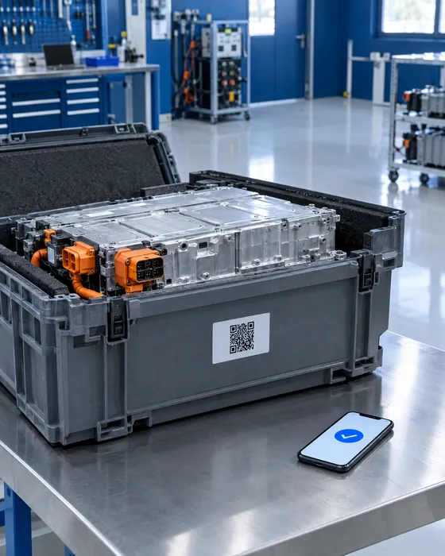
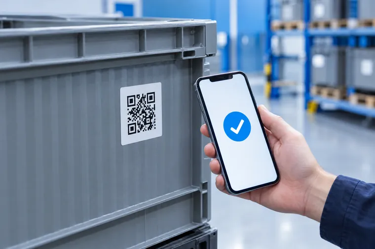

Een paspoort is een fiche
Het beschrijft het product: model, samenstelling, herkomst. Het zegt niet in welke staat dit ene exemplaar op een bepaalde dag vertrok.
Vidimus/Producten/Productpaspoort
In opbouw · eerste pilots vanaf decemberVidimus Productpaspoort
Een batterij, een machine, een container: elk object met een serienummer wisselt vaak van hand. Vidimus legt bij elke overdracht vast in welke staat het vertrok, getekend door beide partijen en voor iedereen te controleren via de QR op het object.
Vidimus geeft zelf geen officieel EU-productpaspoort uit. Het legt de lijn van een object vast: een code met QR‑label, gebeurtenissen, en overdrachten getekend door beide houders.
Dit bouwen we nu; het zit nog niet in de app. Wilt u meedoen aan een pilot, plan dan een gesprek.

Gebruikte EV-module, verzonden naar een herbruiker. Testverslag bij vertrek: gezondheid 84 %. Bij aankomst: "Wij meten 71 %. Uw verslag is na verzending aangepast." Het verschil is € 2 600 waard. Uw bewijs: een pdf die u zelf kunt maken en aanpassen.

Het beschrijft het product: model, samenstelling, herkomst. Het zegt niet in welke staat dit ene exemplaar op een bepaalde dag vertrok.
Een testverslag of afgiftestaat komt uit uw systeem. De koper moet u op uw woord geloven.
Verkoper, vervoerder en koper werken in andere systemen. Bij een discussie staan twee versies tegenover elkaar.
Met de app: het serienummer, foto's en het testverslag met de naam van de tester, het type test, het resultaat en de datum. Vidimus geeft alles een vingerafdruk en een handtekening, en verankert het binnen enkele minuten.
Wie overdraagt en wie ontvangt, tekenen samen de staat, elk op de eigen telefoon. De ontvanger heeft geen abonnement nodig. Tekent hij zonder eID-mandaat van zijn bedrijf, dan staat er mandaat niet geverifieerd bij.
Iedereen scant de QR en ziet de lijn van overdrachten: welke organisatie (of dat ze haar naam afschermt), wanneer en in welke staat. Zonder account. Met de bewijsbundel, die de houder met u kan delen, zelfs volledig zonder Vidimus.


Wie een gebruikte batterij verzendt die geen afval is, heeft per batterij een testverslag nodig: de tester, het type test, het resultaat en de datum, vast op de batterij of de verpakking. Dat geldt sinds 18-08-2025.
EV-batterijen, batterijen van lichte voertuigen (e-bikes, steps) en industriële batterijen boven 2 kWh die vanaf 18-02-2027 op de markt komen, krijgen een batterijpaspoort. Dat maakt de fabrikant, meestal met een paspoortplatform.
Andere productgroepen volgen, ten vroegste rond 2028–2029. Tot dan draait het om eigen nut: minder discussie bij overdracht, en een staat die een koper of verzekeraar kan nakijken.
Algemene informatie, geen juridisch advies. Vidimus vervangt geen paspoortplatform en maakt u niet in orde met de wet. Het verslag zelf maakt de tester; Vidimus maakt het narekenbaar. Of een verankerd verslag met QR volstaat voor bijlage XIV, laat u best nakijken.
Vidimus maakt geen batterijpaspoort (art. 77); dat doet de fabrikant met een paspoortplatform.
| Nieuwe objecten per jaar | Per object, eenmalig |
|---|---|
| 1 – 10 | gratis |
| 11 – 1 000 | € 2,00 |
| 1 001 – 10 000 | € 1,00 |
| 10 001 – 100 000 | € 0,40 |
| boven 100 000 | € 0,15 |
| boven 1 miljoen | op offerte |
Nee. Het toont wie het object op welk moment overdroeg en aanvaardde, en in welke staat. Wie eigenaar is, regelt uw contract.
Nee. Uw platform blijft het paspoort. Vidimus legt eronder vast wat er bij elke overdracht gebeurde, via de API of met de app ernaast.
Nee. Ontvangen en controleren zijn gratis. Tekenen kan op elke recente telefoon.
Ja. Een logger in de kist of op het object wordt een meetbron: elke meting krijgt een vingerafdruk en wordt verankerd. Bij een discussie over schade legt u de metingen naast de overdracht. Dan ziet iedereen wanneer de schok was, en of dat vóór of na de overdracht gebeurde.
Een kopie toont dezelfde lijn van overdrachten. Een nieuwe overdracht tekenen kan alleen de partij die het object volgens die lijn nu heeft. Kijk daarom altijd het serienummer op het object zelf na; de pagina toont het.
Uw account maakt u in twee minuten, zonder betaalgegevens. Een bestuurder identificeert uw bedrijf één keer met de eID. Daarna legt u uw eerste object vast met de app. Werkt u met batterijen of toestellen in grotere aantallen? Dan bekijken we samen hoe het in uw systeem past.